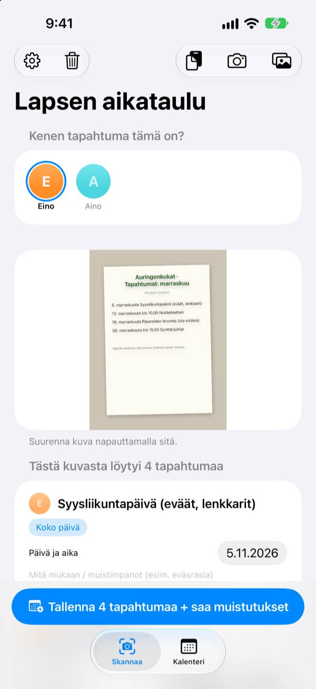
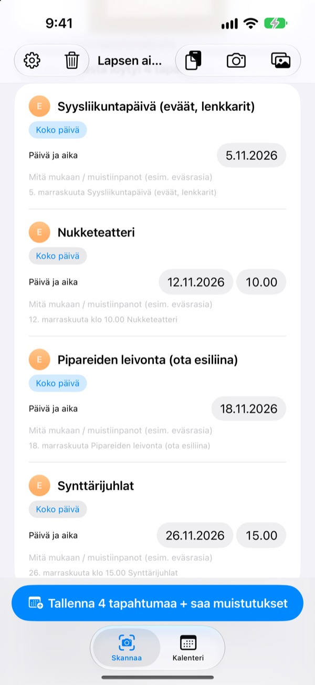
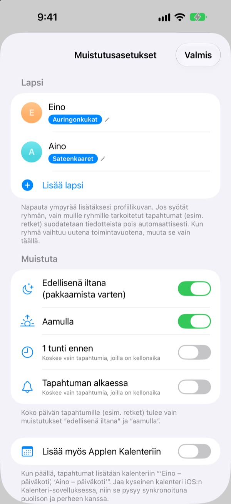
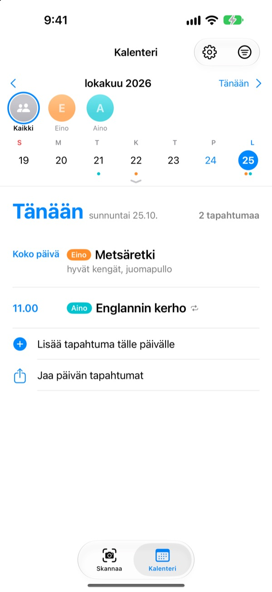

Kuvaa vain tiedote.
Muistutamme illalla.
Ota kuva päiväkodista saamastasi kuukausikalenterista. Lapsen aikataulu lukee päivämäärät, kellonajat ja tapahtumien nimet ja lisää ne kerralla. Retkeä edeltävänä iltana kello 20 tulee muistutus: muista eväät.
Kaikki ominaisuudet ovat ilmaisia. Kuvat eivät lähde iPhonestasi.

Kuvaa tiedote
Tässä on esimerkkitiedote ensi kuun tapahtumista. Ota kuva, niin sovelluksen tapaan siitä poimitaan tapahtumat ja mukaan otettavat tavarat, ja muistutukset ajastetaan valitsemiisi aikoihin.
Kopioitko yhä päiväkodin tiedotteet käsin kalenteriin?
Viisi, kuusi tapahtumaa kuussa, ja joka kerta mukaan tarvitaan jotain muuta: eväät, liikuntavaatteet, esiliina. Jääkaapin oven kalenteria ei näe työmatkalla, ja asia muistuu mieleen aina vasta samana aamuna. Lapsen aikataulu tekee siitä paperista kalenterimerkintöjä ja muistutuksia.
Yksi kuva, koko kuukausi
Kuukausiruudukko, vanhempainkirje tai yksittäinen ilmoitus: ota kuva tai valitse se kuvakirjastosta, niin päivämäärät, kellonajat ja tapahtumien nimet luetaan puolestasi. Voit myös liittää viestin päiväkodista; sanat kuten ”huomenna” tai ”tänä perjantaina” muuttuvat oikeiksi päivämääriksi.
Ennen tallennusta korjaat otsikon, päivän tai tavaralistan saman tien ja pyyhkäiset turhat pois. Kun syötät lapsen ryhmän, vain muille ryhmille tarkoitetut tapahtumat karsitaan.

Edellisenä iltana muistutus
Valitse kello 20 edellisenä iltana, kello 7.30 samana aamuna, tunti ennen tai täsmälleen alkaessa. Mukaan otettavat näkyvät muistutuksessa, joten reppu tulee pakattua.
Applen Kalenterin kanssa tapahtumat menevät lapsen nimiseen kalenteriin, eikä mitään lisätä kahdesti.

Useampi lapsi ja koko perhe
Jokaisella lapsella on oma värinsä. Katso kaikkia yhdessä tai yksi kerrallaan; aiempien tapahtumien perusteella sovellus arvaa, kenen uusi tiedote on.
Lähetä kutsulinkki, niin puoliso, isovanhemmat tai lapsenvahti näkevät ja muokkaavat samoja tapahtumia. Koti-valikon widget näyttää, mitä on tulossa.

Alkuun kolmessa vaiheessa
- 1
Lisää lapsi
Nimi ja ryhmä. Profiilikuvan voi lisätä milloin vain.
- 2
Kuvaa tiedote
Suoraan edestä ja tarkasti, niin teksti luetaan parhaiten.
- 3
Tarkista ja tallenna
Salli ilmoitukset, niin muistutukset tulevat valitsemaasi aikaan.
Milloin muistutukset tulevat
- Klo 20.00 edellisenä iltana
- Pakkaamista varten. Päällä oletuksena
- Klo 7.30 samana aamuna
- Päivän ohjelma. Päällä oletuksena
- 1 tunti ennen
- Vain tapahtumille, joilla on kellonaika
- Tapahtuman alkaessa
- Vain tapahtumille, joilla on kellonaika
Koko päivän tapahtumista, kuten retkistä, tulee vain edellisillan ja aamun muistutus. Voit kytkeä minkä tahansa päälle tai pois asetuksista milloin vain.
Kaikki ominaisuudet ovat ilmaisia
Ilmainen
- Tapahtumien luku kuvista ja viesteistä
- Korjaus ennen tallennusta, muiden ryhmien suodatus
- Muistutukset edellisenä iltana, aamulla, tuntia ennen ja ajallaan
- Oma väri jokaiselle lapselle ja yhteinen kalenteri
- Synkronointi Applen Kalenterin kanssa
- Jakaminen perheelle kutsulinkillä
- Koti-valikon widget
Tue kehittäjää
- Asetuksista voit antaa pienen tipin, juuri sen verran kuin haluat
- Tippi ei avaa mitään. Sovellus toimii ilman sitä samoin
Ei mainoksia, ei tilausta.
Usein kysyttyä
Millaiset kuvat toimivat?
Ruudukkomuotoiset kuukausikalenterit, tekstinä kirjoitetut tiedotteet sekä yksittäiset ilmoitukset ja lehtiset. Suoraan edestä otettu kuva, jossa teksti on terävää, luetaan parhaiten. Voit myös valita useita kuvia ja skannata ne kerralla.
Pari tapahtumaa puuttuu tai otsikossa on kirjoitusvirhe.
Käsialaa tai haaleaa tekstiä voi olla vaikea lukea. Korjaa otsikko, päivä tai tavaralista suoraan listassa, tai pyyhkäise turha pois. Puuttuvan tapahtuman lisäät Skannaa-välilehdellä kohdasta ”Lisää tapahtuma käsin” ja tallennat uudelleen.
Muistutuksia ei tule.
Tarkista kohdasta Asetukset > Ilmoitukset > Lapsen aikataulu, että ilmoitukset on sallittu. Sovelluksen asetuksissa (⚙️) voit myös valita, mitkä muistutukset haluat.
Mukaan tulee muiden ryhmien tapahtumia.
Kirjoita asetuksiin lapsen ryhmän nimi, niin vain muille ryhmille tarkoitetut tapahtumat suodatetaan pois. Jos ryhmä vaihtuu uutena toimintavuonna, muutat sen vain siellä.
Minulla on useampi lapsi.
Asetuksissa voit lisätä niin monta lasta kuin haluat, jokaiselle profiilikuvan. Valitse skannatessa, kenen tapahtumista on kyse: kalenterissa jokaisella lapsella on oma värinsä, ja voit vaihtaa yhteisnäkymän ja lapsikohtaisen suodattimen välillä.
Miten jaan aikataulun puolisoni kanssa?
Avaa asetuksista ”Tapahtumien jakaminen”, napauta ”Kutsu mukaan” ja lähetä linkki viestillä. Kutsuttu näkee ja muokkaa kaikkia lapsia ja tapahtumia, ja kummankin muutokset näkyvät heti molemmilla. Tällä ei ole tekemistä Applen Perhejaon kanssa.
Voiko jakaa muillakin tavoilla?
Kalenteri-välilehden jakopainikkeella lähetät Lapsen aikataulu -tiedoston, kalenteritiedoston (.ics) tai tekstiyhteenvedon. Kun ”Lisää myös Applen Kalenteriin” on päällä, syntyy lapsen niminen kalenteri; jaa se iCloudin kautta Kalenteri-apissa, niin perhe pysyy ajan tasalla.
Lähetetäänkö kuviani tai tapahtumiani jonnekin?
Ei. Kuvien teksti luetaan kokonaan laitteella, ja tiedot tallennetaan vain sinne. Tapahtumat kulkevat iCloudisi kautta vain, jos kutsut jonkun ”Tapahtumien jakaminen” -toiminnolla, ja vain kutsutuille.
Ongelmia tai toiveita? Kirjoita osoitteeseen leeo@kakao.com. Vastaamme yleensä 2–3 päivän kuluessa. Laitemalli ja iOS-versio auttavat meitä.